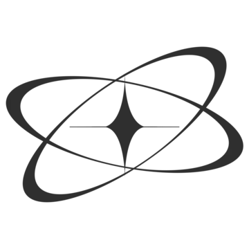

jamil fayad
- accueil
- projets
- contact

Créons ensemble des expériences
web
intuitives et performantes qui
donneront vie à vos idées.
Connita
Wonders of the world
jsp encore

Je suis un développeur web passionné par la création d'expériences numériques intuitives et performantes. Actuellement étudiant en développement web, je suis toujours en quête de nouvelles connaissances et de défis à relever.
Vous avez des
questions?
Contactez-moi
- github